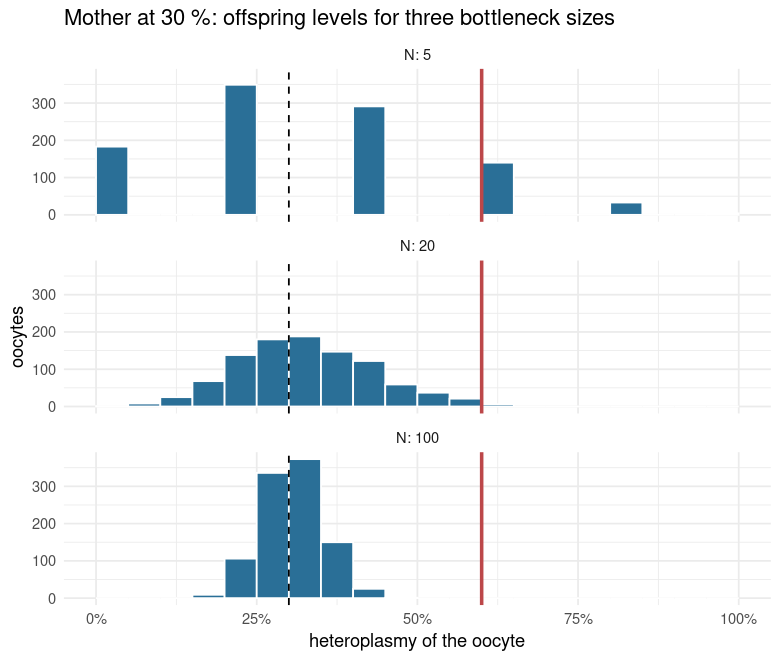
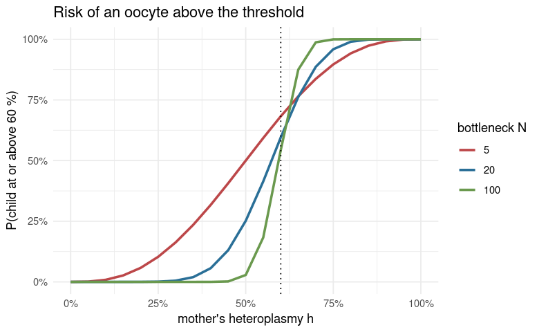

Exercise in R: organelle inheritance
Goal
By the end of this exercise you should be able to:
- simulate the mitochondrial bottleneck with
rbinomandreplicate, and wrap it in a small function; - compare offspring heteroplasmy distributions for several bottleneck sizes with faceted ggplot2 histograms, and check the variance against \(h(1-h)/N\);
- compute the exact probability of a child above a disease threshold with
pbinom, and plot it as a risk curve; - read a gene table of the human mitochondrial genome and answer questions about it with dplyr.
Before you start
This page builds on the by-hand part and the demo of the Exercise, so do those first. You need the packages dplyr, ggplot2 and readr.
Download the data file into a folder data/ next to your script:
data/mtdna_genes.csv: the 37 genes of human mtDNA, built from the NCBI RefSeq record NC_012920.1 (downloaded 2026-11-20; seedata/README.md). Lines starting with#are comments.
The heteroplasmy levels in R1–R4 are simulated, not measured.
library(dplyr)
library(ggplot2)
library(readr)Tasks
In the pedigree unit you simulated families with rbinom and replicate. The bottleneck is the same idea: rbinom(1, size = N, prob = h) draws the number of mutant copies among the N founders of one oocyte, and replicate repeats that for many oocytes. Use set.seed so that your numbers match the solutions.
R1. (one bottleneck) A mother has \(h = 0.30\) and the bottleneck is \(N = 20\). Draw the number of mutant founders for one oocyte, and turn it into a level. Then write a function bottleneck(h, N, n_oocytes) that returns the levels of n_oocytes oocytes, run it for 1000 oocytes, and compare the mean and variance with \(h\) and \(h(1-h)/N\).
h <- 0.30 # the mother's heteroplasmy: 30 % of her mtDNA copies are mutant
N <- 20 # bottleneck size: mtDNA copies that reach each oocyte
set.seed(1)
rbinom(1, size = N, prob = h) # mutant copies in one oocyte
rbinom(1, size = N, prob = h) / N # ... as a heteroplasmy level
bottleneck <- function(h, N, n_oocytes) {
replicate(n_oocytes, rbinom(1, size = N, prob = h) / N)
}
set.seed(1)
levels20 <- bottleneck(h = 0.30, N = 20, n_oocytes = 1000)
head(levels20, 10)
mean(levels20)
var(levels20)
h * (1 - h) / N(rbinom(1000, size = N, prob = h) / N gives the same kind of result in one call; replicate makes the “one oocyte at a time” idea explicit.)
R2. (three bottleneck sizes) Simulate 1000 oocytes each for \(N = 5\), \(20\) and \(100\), stack them in one tibble with bind_rows, and plot one histogram per \(N\) with facet_wrap. Add the mother’s level (dashed) and a threshold of 60 % (red). Why does the top panel look so different?
set.seed(2)
sims <- bind_rows(
tibble(N = 5, level = bottleneck(0.30, 5, 1000)),
tibble(N = 20, level = bottleneck(0.30, 20, 1000)),
tibble(N = 100, level = bottleneck(0.30, 100, 1000))
)
sims |> count(N)
threshold <- 0.60
ggplot(sims, aes(x = level)) +
geom_histogram(binwidth = 0.05, boundary = 0, closed = "left", fill = "#2a6f97", colour = "white") +
geom_vline(xintercept = 0.30, linetype = "dashed") +
geom_vline(xintercept = threshold, colour = "#bc4749", linewidth = 1) +
facet_wrap(~ N, ncol = 1, labeller = label_both) +
scale_x_continuous(labels = scales::percent) +
coord_cartesian(xlim = c(0, 1)) +
labs(x = "heteroplasmy of the oocyte", y = "oocytes",
title = "Mother at 30 %: offspring levels for three bottleneck sizes") +
theme_minimal()(closed = "left" puts a level of exactly 60 % in the bar that starts at 60 %, so the bar sits on the right side of the threshold line.)
R3. (summarise by N) For each \(N\), compute the mean level, the variance, the expected variance \(0.3 \times 0.7 / N\), the fraction of oocytes at or above the threshold, and the fraction that has lost the variant altogether (level 0). Use group_by and summarise.
sims |>
group_by(N) |>
summarise(mean = mean(level),
var = var(level),
var_expected = 0.30 * 0.70 / first(N),
above = mean(level >= threshold),
homoplasmic_normal = mean(level == 0))R4. (exact risk curves) The simulation estimates a probability that we can also compute exactly. An oocyte is at or above the threshold \(t\) when \(k \ge \lceil tN \rceil\), and pbinom(q, N, h) gives \(P(k \le q)\). Write p_above(h, N, threshold), check it against R3, and compute the risk for mothers at 0 % to 100 % for \(N = 5\), \(20\) and \(100\). Plot the three curves.
p_above <- function(h, N, threshold) {
1 - pbinom(ceiling(threshold * N) - 1, size = N, prob = h)
}
p_above(0.30, 20, 0.60)
p_above(0.30, 5, 0.60)
risk <- tibble(h = round(seq(0, 1, by = 0.05), 2)) |>
mutate(N5 = p_above(h, 5, threshold),
N20 = p_above(h, 20, threshold),
N100 = p_above(h, 100, threshold))
risk |>
filter(h %in% c(0.1, 0.2, 0.3, 0.4, 0.5, 0.6, 0.7)) |>
mutate(across(c(N5, N20, N100), \(x) round(x, 4)))
risk_long <- bind_rows(
risk |> transmute(h, N = "5", p = N5),
risk |> transmute(h, N = "20", p = N20),
risk |> transmute(h, N = "100", p = N100)
) |> mutate(N = factor(N, levels = c("5", "20", "100")))
ggplot(risk_long, aes(x = h, y = p, colour = N)) +
geom_line(linewidth = 1) +
geom_vline(xintercept = threshold, linetype = "dotted") +
scale_x_continuous(labels = scales::percent) +
scale_y_continuous(labels = scales::percent) +
scale_colour_manual(values = c("#bc4749", "#2a6f97", "#6a994e")) +
labs(x = "mother's heteroplasmy h", y = "P(child at or above 60 %)",
colour = "bottleneck N",
title = "Risk of an oocyte above the threshold") +
theme_minimal()For a mother below the threshold, which bottleneck size gives the highest risk? And for a mother above it?
R5. (the genome itself) Read the gene table. Count the genes by type. What fraction of the 16 569 bp do the genes cover (summing their lengths)? Which genes overlap their neighbour, and by how much? In which genes do m.3243 and m.11778 lie? Finally, check whether each protein-coding gene’s length is a multiple of 3.
genes <- read_csv("data/mtdna_genes.csv", comment = "#", show_col_types = FALSE)
genes |> count(type)
sum(genes$length_bp)
sum(genes$length_bp) / 16569
genes |>
arrange(start) |>
mutate(overlap_bp = lag(end) - start + 1) |>
filter(overlap_bp > 0) |>
select(gene, start, end, overlap_bp)
genes |> filter(start <= 3243, end >= 3243)
genes |> filter(start <= 11778, end >= 11778)
genes |>
filter(type == "CDS") |>
mutate(remainder = length_bp %% 3) |>
select(gene, length_bp, remainder, strand)Six of the 13 protein-coding genes are not a whole number of codons. How can a gene end in an incomplete codon?
Solutions
All output below is from Rscript --vanilla run in the unit folder. Messages from loading packages are not shown.
R1.
[1] 5
[1] 0.25
[1] 0.25 0.25 0.30 0.45 0.20 0.45 0.45 0.35 0.35 0.15
[1] 0.3012
[1] 0.01037894
[1] 0.0105The first oocyte got 5 mutant founders out of 20 (25 %). Over 1000 oocytes the mean is 0.301, close to the mother’s 0.30, and the variance 0.0104 is close to \(h(1-h)/N = 0.0105\): an SD of about 10 percentage points.
R2.
# A tibble: 3 × 2
N n
<dbl> <int>
1 5 1000
2 20 1000
3 100 1000
With \(N = 5\) the only possible levels are 0, 20, 40, 60, 80 and 100 %, so the histogram has a few widely spaced bars, and a fair share of them lies at or above 60 %. With \(N = 100\) every oocyte lies within about 10 points of the mother.
R3.
# A tibble: 3 × 6
N mean var var_expected above homoplasmic_normal
<dbl> <dbl> <dbl> <dbl> <dbl> <dbl>
1 5 0.301 0.0457 0.042 0.177 0.183
2 20 0.303 0.0112 0.0105 0.006 0.001
3 100 0.302 0.00221 0.0021 0 0The mean stays at about 0.30 for every \(N\): the bottleneck does not push the level up or down on average. The variance follows \(h(1-h)/N\) (0.046 vs 0.042, 0.011 vs 0.0105, 0.0022 vs 0.0021). With \(N = 5\), 17.7 % of the oocytes are at or above 60 %, and 18.3 % have lost the variant (exact: \(0.7^5 = 0.168\)). With \(N = 20\) only 0.6 % are above the threshold; with \(N = 100\) none.
R4.
[1] 0.005138162
[1] 0.16308
# A tibble: 7 × 4
h N5 N20 N100
<dbl> <dbl> <dbl> <dbl>
1 0.1 0.0086 0 0
2 0.2 0.0579 0.0001 0
3 0.3 0.163 0.0051 0
4 0.4 0.317 0.0565 0
5 0.5 0.5 0.252 0.0284
6 0.6 0.683 0.596 0.543
7 0.7 0.837 0.887 0.988
The exact values agree with the simulation in R3: 0.005 for \(N = 20\) (simulated 0.006) and 0.163 for \(N = 5\) (simulated 0.177). For a mother below the threshold, the smallest bottleneck gives the highest risk (at \(h = 0.3\): 16 % for \(N = 5\), 0.5 % for \(N = 20\), practically 0 for \(N = 100\)). For a mother above the threshold it is the other way round: a large bottleneck keeps almost all her eggs above it (98.8 % at \(h = 0.7\), \(N = 100\)), while a small bottleneck gives her a better chance of an egg below it. The curves cross close to the threshold. A small bottleneck makes the outcome less predictable in both directions.
R5.
# A tibble: 3 × 2
type n
<chr> <int>
1 CDS 13
2 rRNA 2
3 tRNA 22
[1] 15416
[1] 0.9304122
# A tibble: 5 × 4
gene start end overlap_bp
<chr> <dbl> <dbl> <dbl>
1 TRNQ 4329 4400 3
2 TRNY 5826 5891 1
3 ATP6 8527 9207 46
4 COX3 9207 9990 1
5 ND4 10760 12137 7
# A tibble: 1 × 7
gene type product start end strand length_bp
<chr> <chr> <chr> <dbl> <dbl> <chr> <dbl>
1 TRNL1 tRNA tRNA-Leu 3230 3304 + 75
# A tibble: 1 × 7
gene type product start end strand length_bp
<chr> <chr> <chr> <dbl> <dbl> <chr> <dbl>
1 ND4 CDS NADH dehydrogenase subunit 4 10760 12137 + 1378
# A tibble: 13 × 4
gene length_bp remainder strand
<chr> <dbl> <dbl> <chr>
1 ND1 956 2 +
2 ND2 1042 1 +
3 COX1 1542 0 +
4 COX2 684 0 +
5 ATP8 207 0 +
6 ATP6 681 0 +
7 COX3 784 1 +
8 ND3 346 1 +
9 ND4L 297 0 +
10 ND4 1378 1 +
11 ND5 1812 0 +
12 ND6 525 0 -
13 CYTB 1141 1 +37 genes: 13 protein-coding, 22 tRNA, 2 rRNA. Their lengths add up to 15 416 bp, 93 % of the genome (slightly too high, because overlapping stretches are counted twice); almost all the rest is the control region. Five genes overlap the previous one, most clearly ATP8/ATP6 by 46 bp and ND4L/ND4 by 7 bp: the two genes are read in different reading frames from one mRNA. m.3243 lies in TRNL1 (tRNA-Leu, MT-TL1) and m.11778 in ND4 (MT-ND4), as in ClinVar. Only ND6 is on the other strand. Six protein-coding genes (ND1, ND2, COX3, ND3, ND4 and CYTB, with remainder 1 or 2) do not end in a complete codon: their stop codon is completed by polyadenylation. A gene that ends in T or TA becomes TAA, a stop codon, when the poly-A tail is added to the mRNA.
Where this leads
The model in R1 is one generation of genetic drift: a random sample of a finite number of copies. In Part 7 (Drift and selection) you repeat it generation after generation with a loop, and watch allele frequencies drift to 0 or 1, with the same variance \(p(1-p)/N\) per generation (for \(N\) copies).